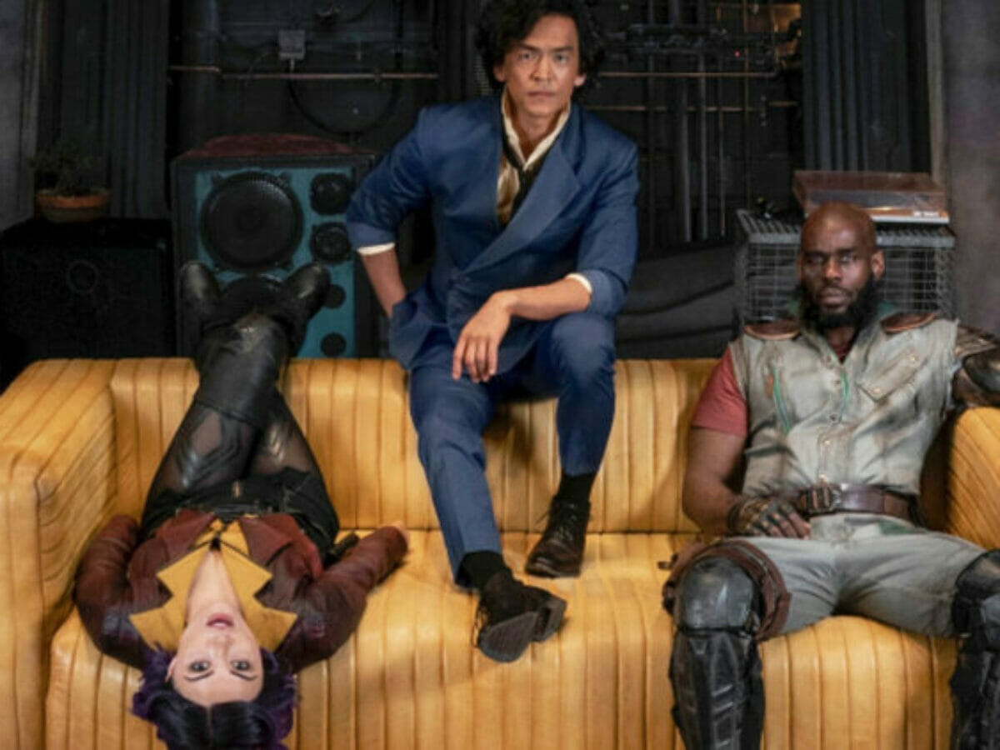
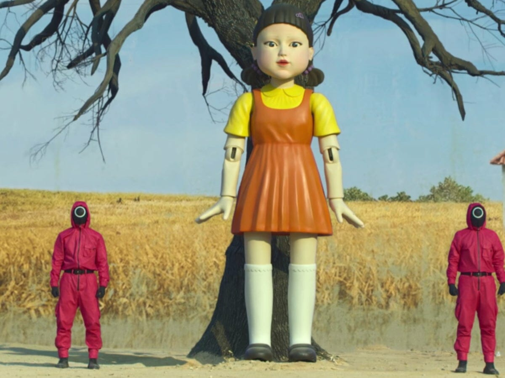
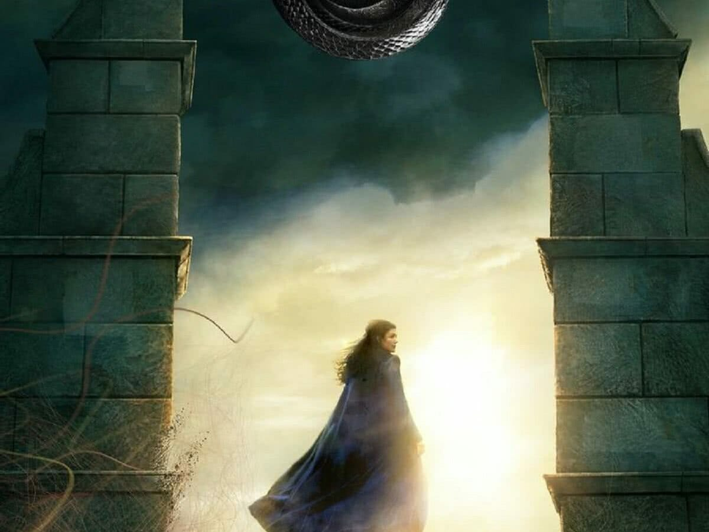
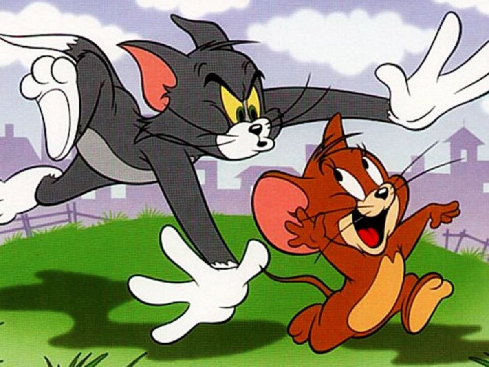

NCIS quebra tradição da série em 2021
Parece que seriado decidiu fazer algumas revoluções com a 19ª temporada.
Cowboy Bebop: Netflix termina especulação de meses sobre Ed com vídeo
Série já está disponível na plataforma.
Round 6: Planos da 2ª temporada apontam para trágica morte
Série se tornou um fenômeno mundial na Netflix.
Prime Video lança nesta sexta série para rivalizar com The Witcher
A Roda do Tempo, com Rosamund Pike e ator de La Casa de Papel, estreia no serviço da Amazon.
Fãs ficam chocados com os verdadeiros nomes de Tom e Jerry
Personagens são populares e amados no mundo todo.
Ator do Rei do Crime reage a Gavião Arqueiro e chefe de série indica Demolidor
Além de comentário sobre série do Disney+, roteirista de Eco, derivada na Marvel, fez publicação suspeita.